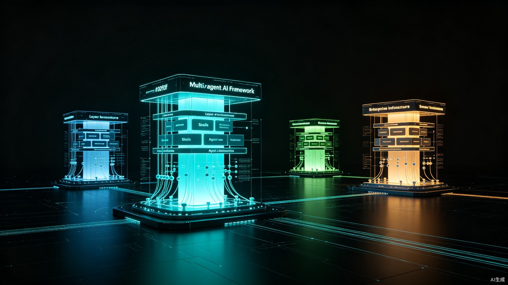

针对企业级生产落地 + 标准化Skill能力 + 多智能体协作三个核心诉求，当前市场可分为两个梯队，其中第一梯队的两款框架是绝大多数企业的最优解，分别适配不同技术栈与业务背景。
核心结论先览
- 国内企业、国产生态、大规模分布式多Agent场景：首选 AgentScope（原生Skill机制+原生多智能体协作+完整企业级工程底座）
- 国际化业务、复杂流程编排、已有LangChain技术栈：首选 LangGraph（生产级编排事实标准+极强状态管控+全链路可观测）
一、选型核心维度定义
先明确企业级场景下的评判标准，避免被原型级框架的演示效果误导：
1.1 企业级工程能力
分布式部署、多租户隔离、持久化状态、全链路可观测、安全审计、权限管控、商业SLA支持、与现有技术栈兼容。这是区分「玩具级」与「生产级」的第一道分水岭。很多框架Demo效果惊艳，但一到生产环境就暴露出持久化缺失、异常处理薄弱、安全机制缺位等问题。
1.2 Skill技能体系
原生标准化封装、渐进式加载（解决上下文膨胀）、技能热插拔、跨Agent复用、技能版本与权限治理。Skill是企业AI能力沉淀的核心载体，没有标准化的Skill体系，就无法构建可复用的智能资产。
1.3 多智能体协作
原生协作范式、分布式调度、Agent间标准化通信、多种协作模式（层级/并行/协商/投票）、动态任务分配。单Agent能力再强，也无法覆盖复杂业务场景，多智能体协同是必然趋势。
二、主流框架分梯队详解
第一梯队：双能力达标，生产级首选
1. AgentScope（阿里开源）
Skill能力（原生支持，企业级优势突出）
原生实现三层渐进式Skill机制：启动时仅加载技能元数据，触发时按需加载结构化指令，执行时动态调用脚本/资源，从根源解决多技能Agent的上下文膨胀问题。
支持运行时热插拔，新增业务技能无需重启服务；采用标准化SKILL.md封装规范，便于企业内部技能资产沉淀、跨团队复用与版本管理。
支持技能分层管控（全局/业务线/单Agent），可配合RBAC权限体系实现技能访问隔离，符合企业级治理要求。
多智能体协作
原生分布式多智能体架构，内置MsgHub消息总线，支持跨节点Agent通信与大规模并发调度。
同时支持两种协作模式：内置拍卖、投票、协商等自主协商范式，也提供Chain线性编排、Graph图编排两种流程化编排能力，覆盖从开放式任务到固定流程的全场景。
企业级属性
提供Python、Java、TypeScript多语言版本，Java 2.0深度适配Spring Boot生态、K8s水平扩展、多租户隔离、零停机发布，完美契合国内企业主流后端技术栈。
配套AgentScope Studio可视化调试平台，支持全链路追踪、日志回放、性能监控；阿里云提供企业版商业支持，含SLA保障、安全审计、定制化开发，深度适配国产大模型与私有化部署环境。
适配场景：国内中大型企业、金融/政务/制造等强合规场景、大规模分布式多Agent系统、需沉淀内部技能资产的企业。
2. LangGraph（LangChain官方）
Skill能力（生态成熟，需自行封装）
原生以Tool工具为核心抽象，可通过自定义节点封装实现标准化Skill体系；LangChain生态内有海量第三方工具/技能组件可直接复用。
无原生渐进式加载机制，需自行实现技能按需调度；但可通过状态机精准控制技能加载时机，配合持久化存储实现技能状态管理。
结合LangSmith平台可实现技能全生命周期管控（开发、测试、发布、监控），适合企业级技能运维。
多智能体协作
基于有向图+状态机实现多Agent编排，支持层级调度、并行协作、子图嵌套，可精准控制每一步Agent流转逻辑，确定性强。
状态管理能力行业领先，原生支持断点续跑、持久化存储、异常回滚，是当前生产级复杂流程的事实标准。
更偏向流程编排式多Agent，而非原生自主协商式协作，协作逻辑需开发者显式定义，灵活度略低于AgentScope。
企业级属性
配套LangSmith可观测平台，支持全链路追踪、Token统计、错误排查、效果评估，生产调试与运维能力最强。
商业版提供企业级权限、SLA保障、私有化部署方案，兼容全球主流大模型与云厂商；生态最成熟，社区与企业案例最丰富。
适配场景：国际化业务、复杂流程自动化、已有LangChain技术栈、强可观测与运维需求的企业。
第二梯队：单维度突出，特定场景适用
3. CrewAI 企业版
- Skill能力：基于Tool机制封装技能，内置CrewAI Tools生态，技能与Agent角色绑定，无原生渐进式加载与全局技能池，跨Agent复用需手动配置。
- 多智能体协作：角色化协作是核心优势，模拟真实团队分工，Agent可自主委托任务、交叉提问，协作逻辑贴近人类工作模式，上手成本极低。
- 企业级属性：企业版提供管控后台、RBAC权限、审计日志、SLA支持，但分布式大规模调度能力弱于第一梯队。
- 适配场景：快速落地业务自动化、内容生产、市场调研等明确分工场景，中小企业快速从原型到生产落地。
4. AutoGen（AG2，微软研究院）
- Skill能力：以代码执行与工具调用为核心技能载体，原生无标准化Skill体系，需自行封装；代码执行类技能能力极强，支持沙箱安全运行。
- 多智能体协作：对话驱动的自主协商式协作，Agent间通过自然语言动态分工、协商解决问题，灵活性最高，但确定性弱。
- 企业级属性：微软技术背书，有商业支持路径，但原生生产治理能力薄弱，可观测、持久化、权限管控需大量二次开发。
- 适配场景：企业研发自动化、代码生成与调试、研究型多Agent场景。
三、核心能力横向对比表
| 框架 | 原生Skill机制 | 多Agent协作模式 | 企业级工程能力 | 上手难度 | 商业支持 | 核心优势场景 |
|---|---|---|---|---|---|---|
| AgentScope | ✅ 原生三层渐进式加载 | 自主协商+流程编排双模式，内置多种协作范式 | ✅ 多语言、分布式、多租户、安全审计 | 中等 | 阿里云企业版 | 国内企业、大规模分布式多Agent、技能资产沉淀 |
| LangGraph | ⚠️ 基于Tool封装，无原生渐进式 | 图式流程编排，显式定义协作逻辑 | ✅ 全链路可观测、状态持久化、生态成熟 | 中等 | LangChain官方企业版 | 复杂流程自动化、生产级运维、国际化业务 |
| CrewAI企业版 | ⚠️ 角色绑定式工具，无原生Skill | 角色化分工协作，自主委托 | ⚠️ 基础管控能力，大规模调度较弱 | 低 | CrewAI官方企业版 | 快速落地、明确分工的业务自动化 |
| AutoGen | ❌ 无原生Skill体系 | 对话式自主协商 | ❌ 需大量二次开发 | 中等 | 微软生态支持 | 研发自动化、代码类多Agent |
四、企业级选型决策路径
4.1 优先选AgentScope的场景
企业在国内，需适配国产大模型、等保合规、私有化部署；核心诉求是多智能体原生协作，同时需要标准化Skill体系沉淀业务能力；后端以Java技术栈为主。
典型适用行业：金融、政务、制造、能源等强监管领域，以及需要构建企业级AI能力平台的中大型组织。
4.2 优先选LangGraph的场景
企业已有LangChain技术栈，或业务以复杂流程编排为核心；强依赖全链路可观测、调试与效果评估能力；国际化业务，需兼容全球主流大模型。
典型适用行业：跨国企业、SaaS服务商、电商/互联网公司，以及流程复杂度高的业务自动化场景。
4.3 优先选CrewAI企业版的场景
需求是快速落地业务自动化场景，角色分工清晰；团队希望低代码快速搭建多Agent系统；规模中等，暂时无需超大规模分布式调度。
典型适用场景：内容生产团队、市场调研部门、中小企业的AI创新项目。
五、落地避坑提醒
5.1 Skill与多Agent的边界
Skill是单Agent的能力扩展，适合专业领域能力复用；多Agent是职责分工，适合跨领域任务拆解。企业级架构通常采用「主控Agent + 全局技能池 + 专业子Agent」的混合模式，而非非此即彼。
5.2 不要用原型代替生产
很多框架演示效果好，但生产级的持久化、异常处理、安全审计、权限管控缺失，选型时必须优先验证工程能力，而非只看Demo效果。一个常见的误区是：用一个周末搭建出惊艳的原型，然后用半年时间补全生产所需的工程能力。
5.3 技术栈匹配度优先
选择框架时，技术栈匹配度往往比功能对比更重要。Java为主的企业强推Python框架，或者Python团队硬上Java生态，最终都会付出额外的适配和维护成本。AgentScope的多语言策略和LangGraph的Python生态优势，都是选型时需要重点考量的因素。